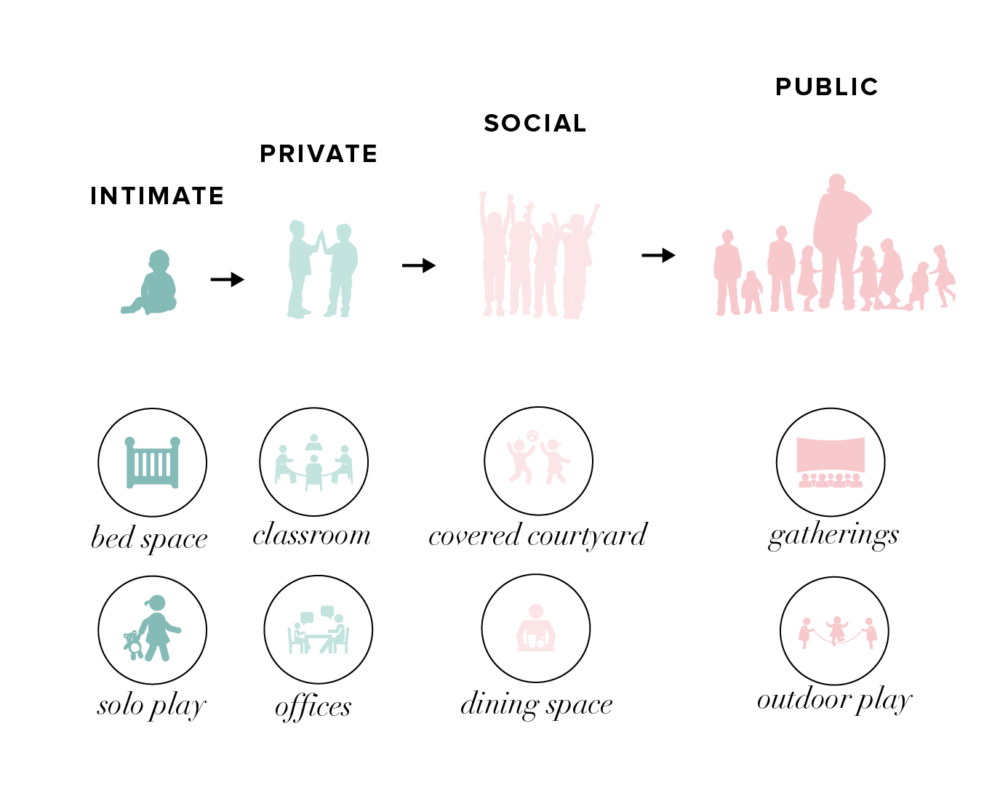
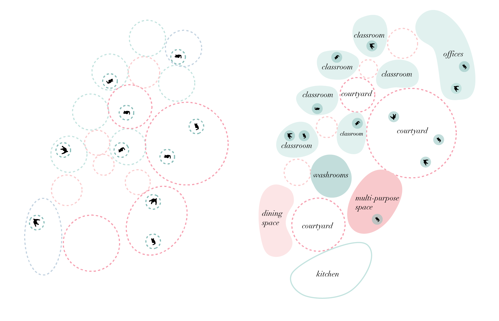
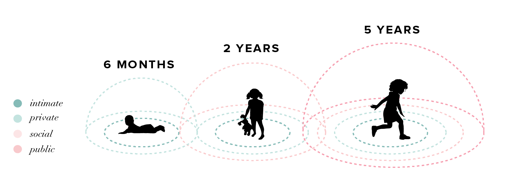
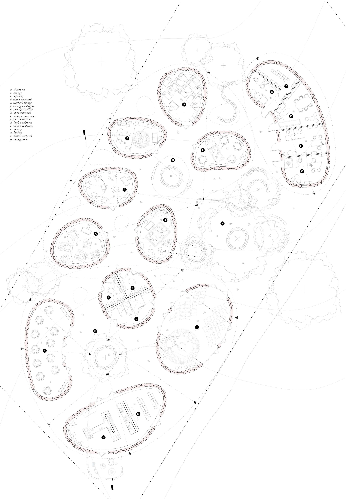
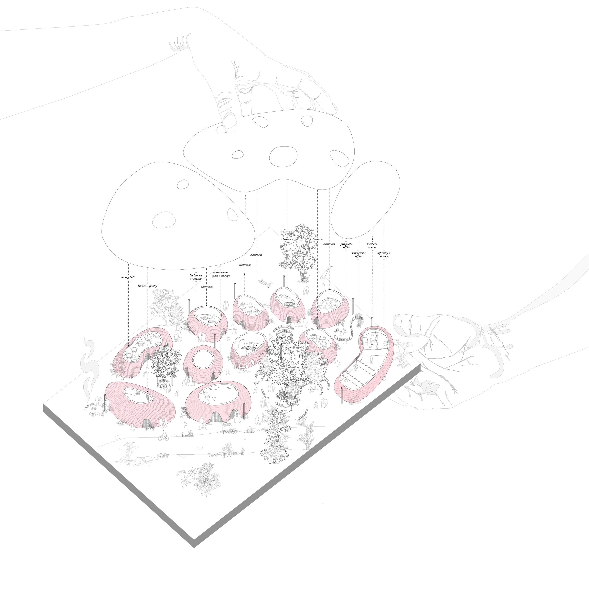
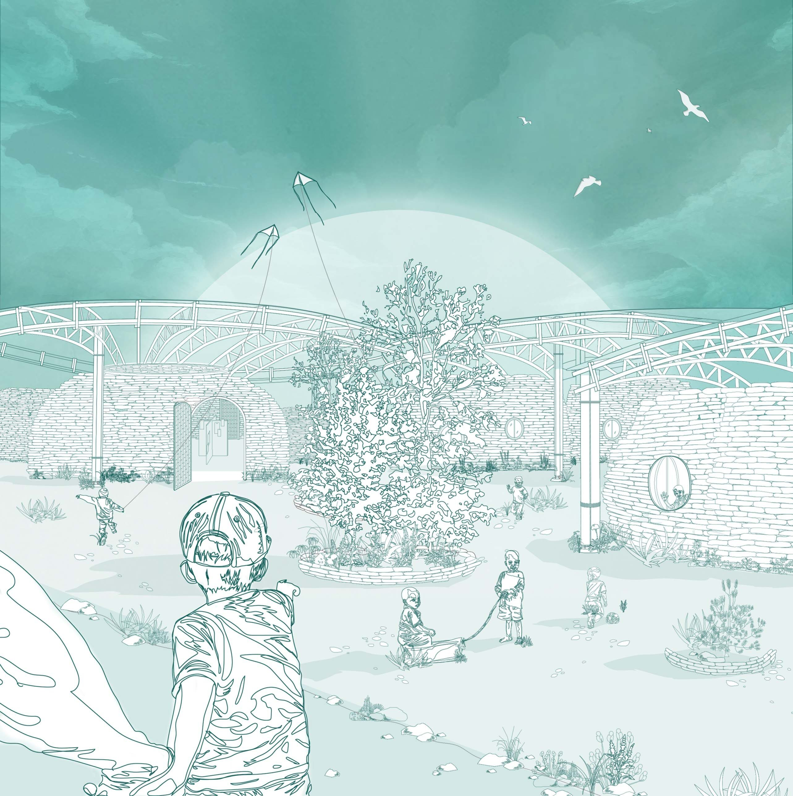
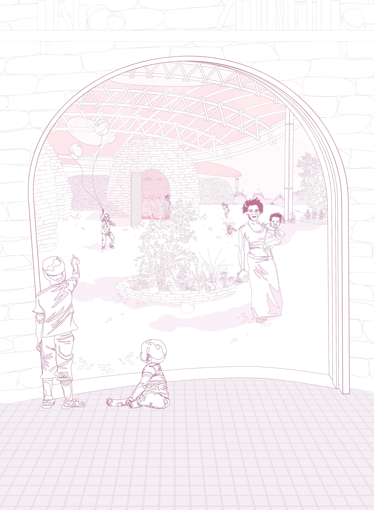
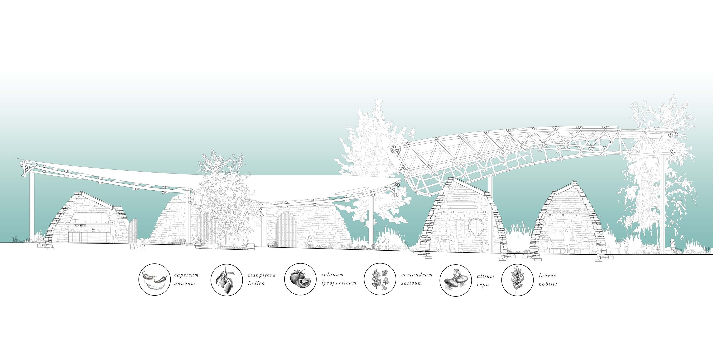
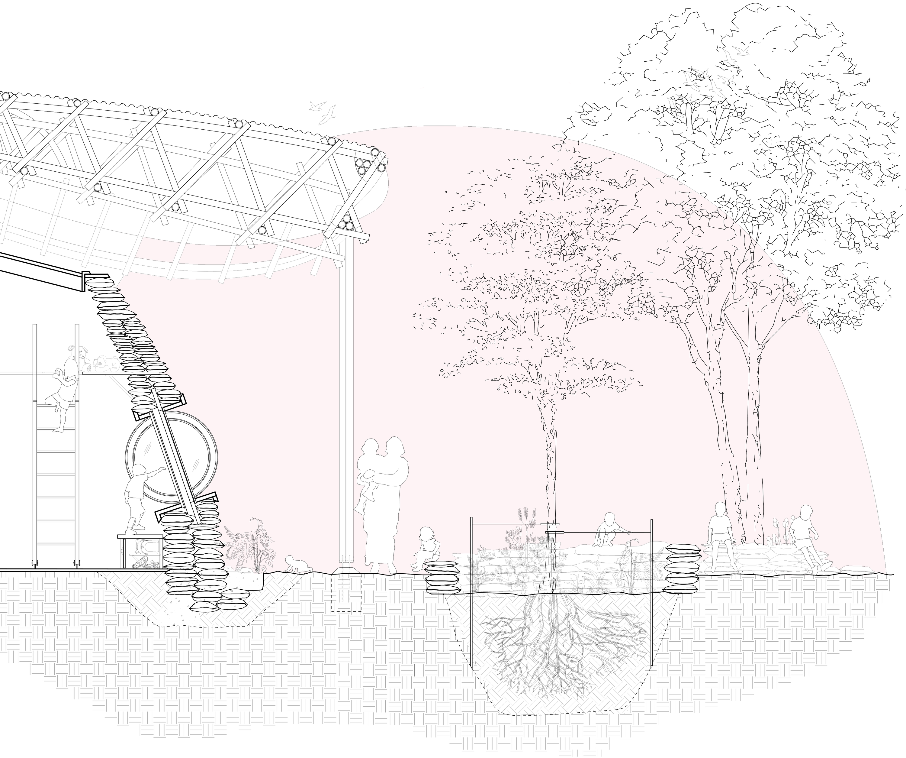

2017
THE C.L.I.X.X. SCHOOL
Child Learning Institute of Xai-Xai
A preschool designed to mediate learning and adapt to children’s disabilities through the science of proxemics.
CONTEXT
Mozambique Preschool Architecture Competition
LOCATION
Xai-Xai, Mozambique
SOFTWARE
Rhinoceros 3D, Photoshop, Illustrator
COLLABORATOR
Lena Ma

For preschool-aged children, social development is crucial to future success. Learning to collaborate and interact is especially important for disabled children and those from disadvantaged backgrounds.
The school’s organization layers four levels of interpersonal distance: intimate, private, social, and public. Classroom hubs establish familiarity and belonging, then connect to small covered courtyards and larger communal gardens. Roadside community programs host special events and provide a buffer between the class pods and the public.








